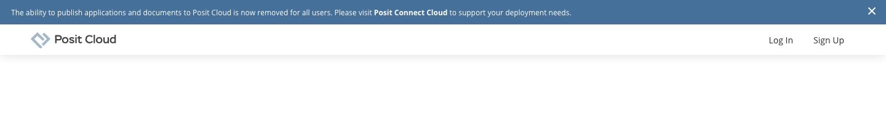
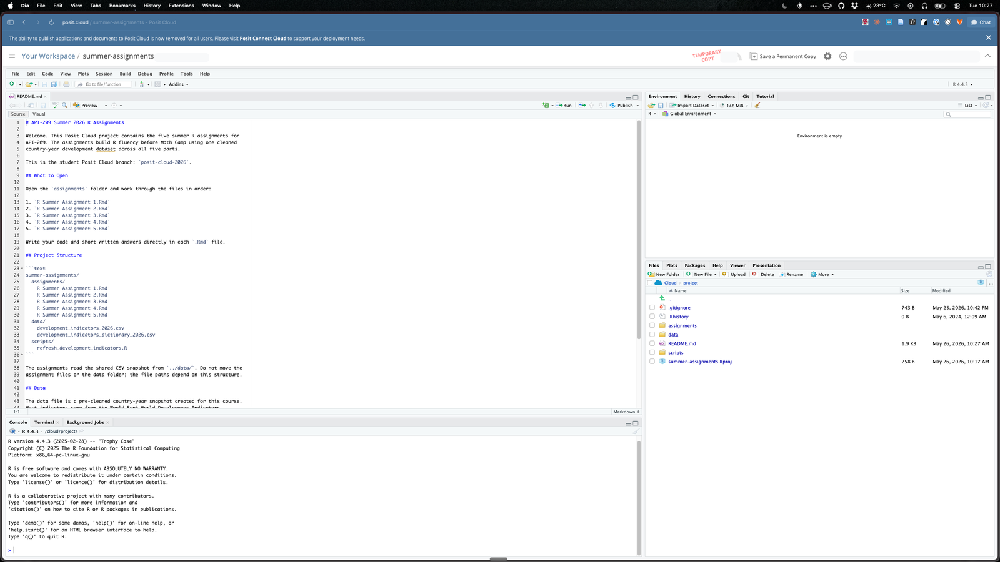
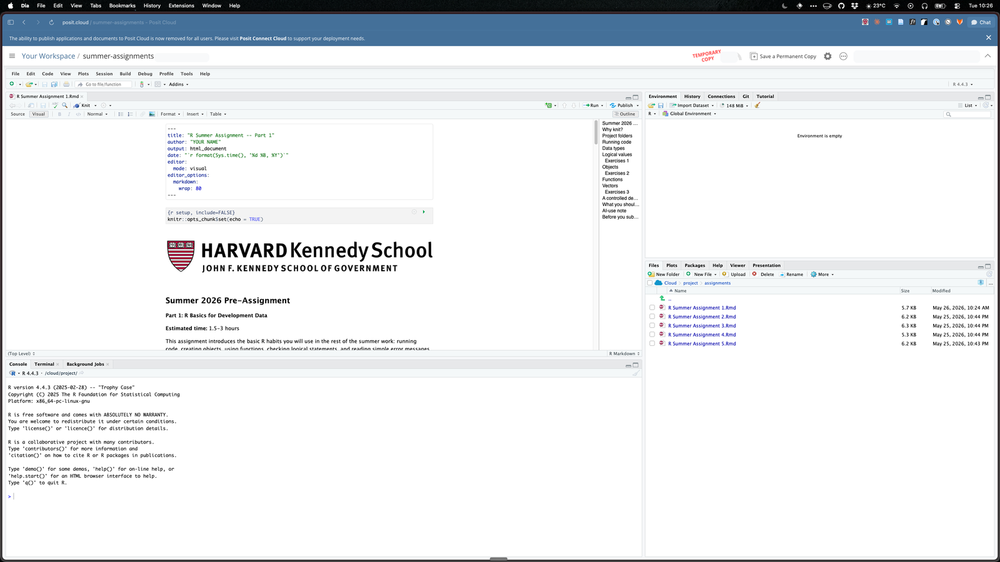

Instructions and support
Use this guide to know what to do next and where to get help.
Optional setup
The assignments run right in your browser with nothing to install —
you do not need this page to get started. Set up Posit Cloud only if
you prefer working in RStudio, or to get a head start on the local
setup everyone adopts at Math Camp. Either way you submit the same
.Rmd files.
Use this guide to know what to do next and where to get help.
Write code and answers inside the assignment .Rmd files.
Submit the completed .Rmd files after they knit.
The screenshots below show what those steps look like and where to find the assignment files once your copy is open.
Opening Posit Cloud
The class project link creates a brand-new temporary copy every time it is opened. Use it once to save your permanent copy. After that, always reopen your own copy, or you will be working in a copy that is not saved to your workspace.
Open the class project, sign in, and click Save a Permanent Copy before editing anything. The setup guide walks through every step.
Follow the setup guideGo to posit.cloud, sign in with the same account as before, and open your copy from Your Workspace. Do not click the class project link again.
Open Your WorkspaceIt creates a brand-new temporary copy without your work. Go to posit.cloud, sign in with the same account, and open your saved copy from Your Workspace.
Check that you signed in with the same account you used when you saved your permanent copy. Most missing-project problems come from switching between Google, GitHub, Clever, or Harvard Google.
This guide reads fine on a phone, but Posit Cloud needs a laptop or desktop browser for editing and knitting.
Posit Cloud is the supported default, but the assignments also run in RStudio Desktop. See the FAQ entry for the short version.



assignments, then open
R Summer Assignment 1.Rmd. Work inside the
.Rmd file and knit it regularly.
In Posit Cloud, the assignment project contains the five R Markdown files, the shared data snapshot, and a data dictionary:
/summer-assignment
assignments/
R Summer Assignment 1.Rmd
R Summer Assignment 2.Rmd
R Summer Assignment 3.Rmd
R Summer Assignment 4.Rmd
R Summer Assignment 5.Rmd
data/
development_indicators_2026.csv
development_indicators_dictionary_2026.csv
scripts/
refresh_development_indicators.ROpen each file in Posit Cloud. Write code and short answers directly in the file, then knit regularly to check your work.
.Rmd
files in Posit Cloud.
The assignments read data with paths like
../data/development_indicators_2026.csv. The
.. means "go up one folder" from
assignments and then enter the shared
data folder.
Posit Cloud opens RStudio in your browser. The screen is divided into panes. You do not need to master every button on day one, but you should know where your work, output, files, and data objects appear.
Usually the upper-left pane. This is where the open
.Rmd file appears. Write your code and short answers
here. The Knit button is also at the top of this
pane when an R Markdown file is open.
Usually the lower-left pane. R prints results and error messages
here when you run code. Use it to test small commands, but put
assignment answers in the .Rmd file.
Usually the upper-right pane. It lists objects created by your code, such as data frames or vectors. If it is empty, that usually means you have not run code that creates objects yet.
Usually the lower-right pane. Use this pane to open
assignments, find the shared data
folder, and download files when submission instructions ask you
to do so.
These tabs share the lower-right area. Plots shows figures, Packages shows installed R packages, Help opens documentation, and Viewer displays some HTML outputs.
All five assignments use the same cleaned country-year development dataset. Each row is one country or economy in one year. Most indicators come from the World Bank World Development Indicators, and governance indicators come from the Worldwide Governance Indicators.
We use a local CSV snapshot so everyone has the same data and the notebooks knit reliably. The data dictionary gives the source, indicator code, unit, and interpretation notes for each variable.
Browse the data dictionaryPosit Cloud is the browser-based RStudio environment for the summer assignments. It lets you edit, run, save, and download the assignment files without installing software.
R is the programming language used for the assignments. RStudio is the interface you use to write and run R code. Posit Cloud gives you RStudio in your browser.
R Markdown combines instructions, code, output, and written
responses. The completed .Rmd file is what you
submit.
Knitting runs an assignment from top to bottom in a fresh R session. A successful knit is the main check that your code and written answers are reproducible.
If you have never used R before, start with the warm-up. It introduces the habits you will use in the assignments: read the code, predict the result, run it, and explain what happened.